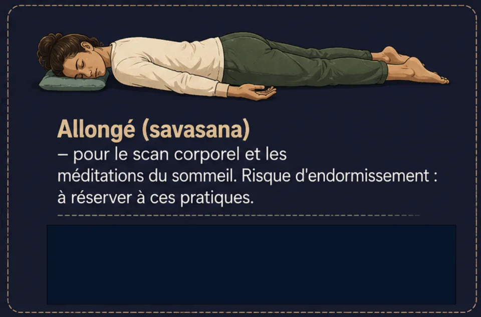
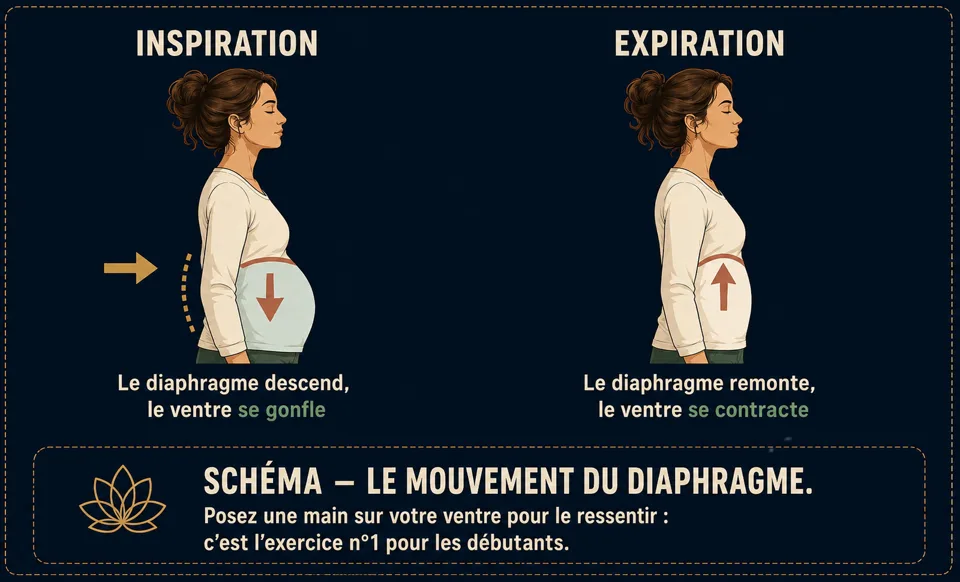
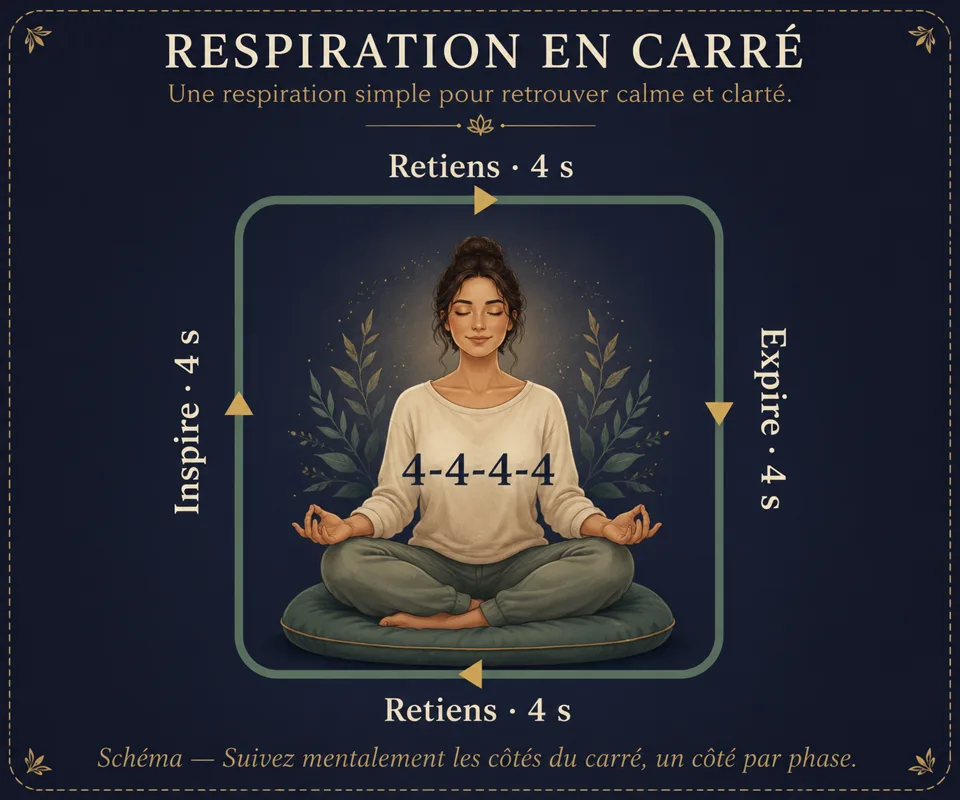

Respiration : 4 techniques pour méditer et s’apaiser
Respiration abdominale, cohérence cardiaque, respiration carrée, 4-7-8 : les 4 techniques de respiration de la méditation, avec schémas et précautions.
La respiration est l'outil le plus direct pour calmer le corps et l'esprit : toujours disponible, gratuite, efficace en quelques minutes. Respiration abdominale, cohérence cardiaque, respiration carrée, 4-7-8 : quatre techniques à connaître pour s'apaiser, se concentrer ou s'endormir.
La respiration
Comprendre : la respiration abdominale
La plupart d'entre nous respirons « par le haut » (poitrine, épaules), une respiration courte associée au stress. La respiration méditative descend dans le ventre : à l'inspiration, le diaphragme s'abaisse et le ventre se gonfle ; à l'expiration, il remonte et le ventre se dégonfle. C'est la respiration naturelle du sommeil et du calme.

- Posez une main sur le ventre, l'autre sur la poitrine.
- Inspirez par le nez en laissant le ventre pousser doucement la main. La main du haut bouge à peine.
- Expirez lentement par le nez ou la bouche, le ventre revient. Expirez un peu plus longtemps que vous n'inspirez.
- Répétez 10 respirations. C'est votre premier exercice complet de méditation.
Les 4 techniques respiratoires à connaître
Chacune a un usage précis. Apprenez-les dans cet ordre — elles reviennent dans toutes les méditations du menu.
① La cohérence cardiaque (5-5) — l'équilibre quotidien
Inspirez 5 secondes, expirez 5 secondes, pendant 5 minutes (6 respirations/minute). Pratiquée 3 fois par jour, elle régule le stress en agissant sur le système nerveux autonome.

② La respiration carrée (4-4-4-4) — la concentration
Quatre temps égaux : inspirez 4 s, retenez 4 s (poumons pleins), expirez 4 s, retenez 4 s (poumons vides). Utilisée pour se recentrer avant un moment exigeant.

③ Le 4-7-8 — l'endormissement et l'apaisement
Inspirez par le nez 4 s, retenez 7 s, expirez lentement par la bouche 8 s (comme dans une paille). L'expiration très longue active le frein naturel du corps. 4 cycles suffisent au début.

④ La respiration alternée (Nadi Shodhana) — le rééquilibrage
On respire par une narine à la fois, en alternant. Effet clarifiant et calmant, idéale avant une séance de méditation.
- Main droite : pouce sur la narine droite, annulaire prêt pour la gauche.
- Bouchez la droite, inspirez à gauche (4 s).
- Bouchez la gauche, expirez à droite (6 s), puis inspirez à droite (4 s).
- Bouchez la droite, expirez à gauche (6 s). Cela fait un cycle — enchaînez 5 à 10 cycles.
🌬️ Guide de respiration interactif
La bulle qui guide ton souffle en temps réel — elle grandit à l'inspiration, rétrécit à l'expiration — se trouve dans l'application, avec les quatre rythmes ci-dessus. Télécharge Awakening Minds gratuitement pour l'essayer.
Questions fréquentes
Quelle respiration pour s'endormir ?
Le 4-7-8 : son expiration longue ralentit naturellement le rythme. Pratique-la allongé, dans le noir, puis enchaîne avec une méditation guidée pour dormir — le duo le plus efficace pour un sommeil profond.
Combien de temps pratiquer la cohérence cardiaque ?
Cinq minutes suffisent : six respirations par minute, idéalement trois fois par jour. C'est l'exercice de respiration guidée le plus simple à installer au quotidien.
La respiration carrée, c'est pour qui ?
Pour retrouver la concentration avant un moment exigeant : ses quatre phases égales occupent l'esprit entièrement. Évite en revanche les rétentions en cas de grossesse ou de difficultés cardiaques ou respiratoires.
Envie de pratiquer plutôt que de lire ?
Tout ce que décrit cet article se pratique dans Awakening Minds, application de méditation gratuite : 150 méditations guidées en français — sommeil, respiration guidée, mondes immersifs — sans abonnement, sans publicité, sans compte, et tout fonctionne hors ligne.
✦ Découvrir l'application gratuiteÀ lire ensuite
Méditation pour dormir : t’endormir plus facilement
Pourquoi le sommeil fuit quand on le poursuit, la posture du soir, la respiration 4-7-8 et comment une méditation guidée pour dormir agit vraiment.
La posture de méditation : 4 positions, 7 points
Chaise, tailleur, seiza ou allongé : les 4 positions de méditation en schémas, et les 7 points d’une posture digne et détendue.